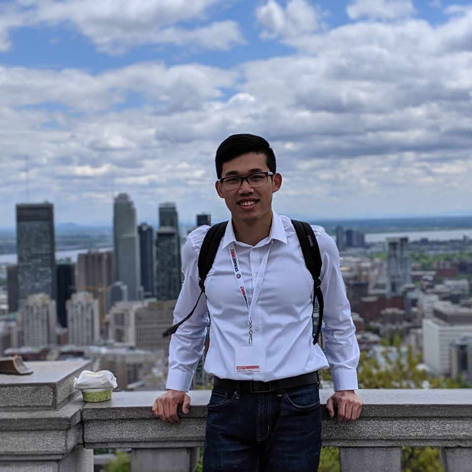
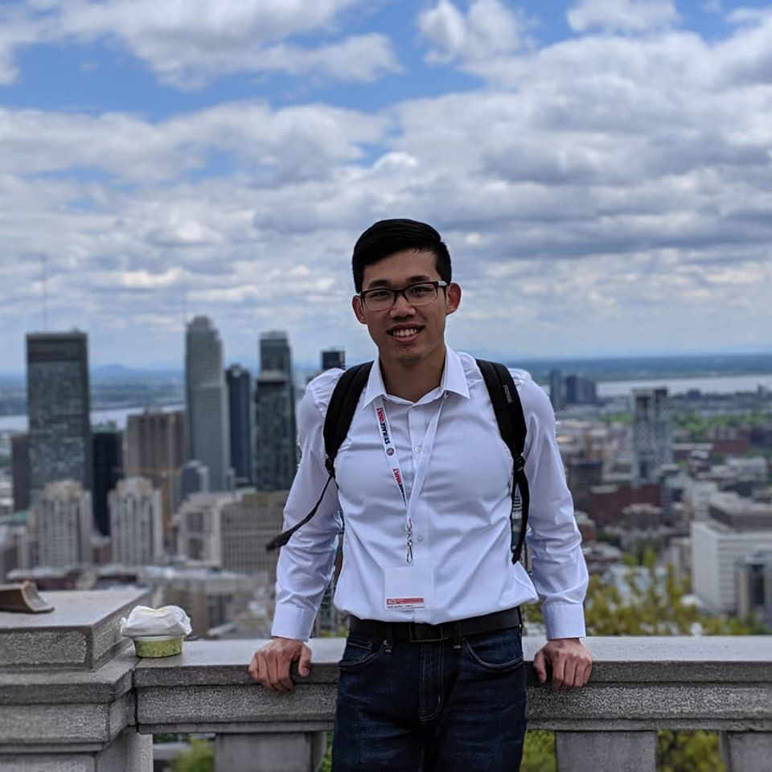

About Me
My name is Yixiang Gao, originally from Shanghai, China. I am a PhD candidate majoring in Electrical and Computer Engineering at University of Missouri - Columbia. I work as a research assistant at the Vision-Guided Intelligent Robotics Laboratory.
I am passionate in the field of robotics, computer vision, and machine learning in general. My research focus on detecting, quantifying, and mitigating confounding bias in various machine learning models. I believe this is an area that can (or already have) tremendously impact people’s lives on a practical level. As someone who studies and develops these mathematical and computational mechanisms, I feel privileged but also responsible for the models I build.
Two things that I have learned so far during my journey as a research assistant and a computer engineer: 1) it is almost impossible to find the exact article or support materials that fit exactly to the project that I am working on. 2) sometimes it is very hard to find a good tutorials that can help me understand the topic intuitively.
Thus, the purpose for this website is to first, share with everyone some of cool projects (at least I consider) that I had done and how I did them. I would love to share those experiences that I have in using a particular toolbox, different libraries, or applications that I hope can help other engineers or developers. Second, after several years of studying in this field, I have also built some intuitions on certain topics that I am most familiar with. So I would love to share those knowledge to hopefully assist others who are also interested in those subjects I study.
Besides working, I also enjoy travelling and creating new experiences. I think one of my favourite part of being a graduate student is that I can travel around for conferences all over the world. It really opened up my perspectives even further and I was also to experience different culture and make friends everywhere I go. It also brings me huge motivations for life in general. Thus, I also want this site to be a place that I can share whatever that I am passionate about.

 
